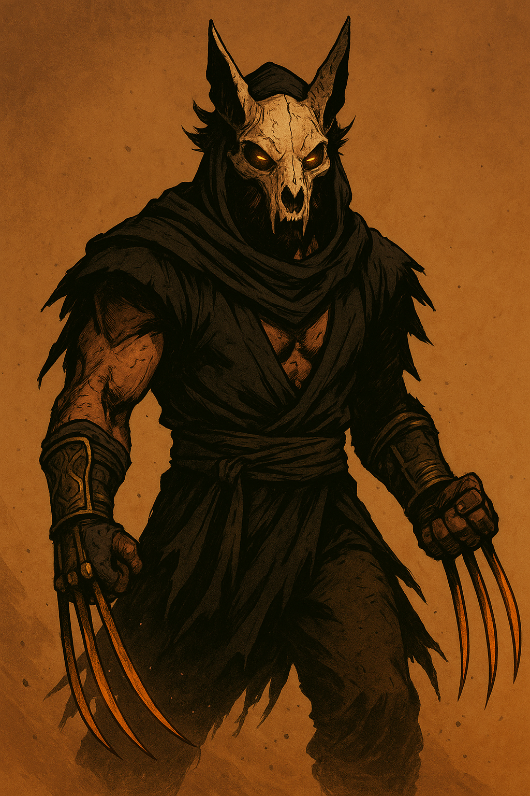

← Back to Gallery
🔥 Gulvarine – The Desert Fang

Origin
Born in the burning sands of the Thar Desert, Gulzar was a nomadic warrior cursed by a dying djinn...
Powers & Abilities
- Zarrium claws that cut through magic and steel.
- Heat adaptation for strength and rapid healing.
- Sandstep teleportation through dunes and sandstorms.
- Berserker mirages to confuse enemies.
Appearance
Glowing amber eyes, cracked jackal skull mask, ragged desert robes with golden thread...
Personality
Stoic, haunted by lost souls, believes in justice through balance...
Concept Art & Gallery